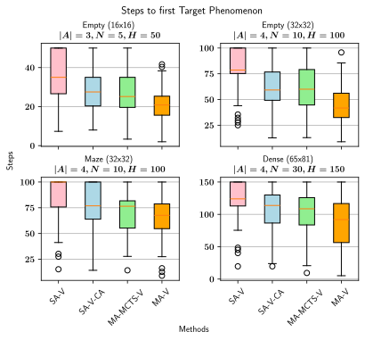
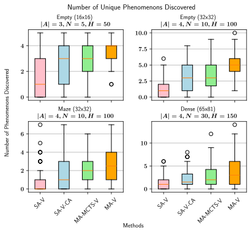
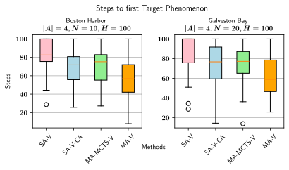
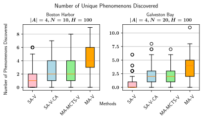
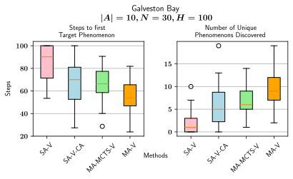
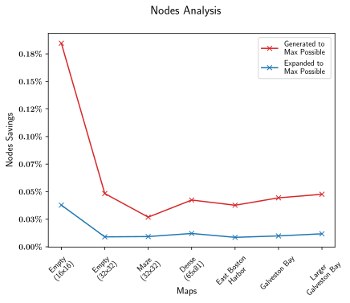

Scientists often search for phenomenon of interest while exploring new environments. Autonomous vehicles are deployed to explore such areas where human-operated vehicles would be costly or dangerous. Online control of autonomous vehicles for information-gathering is called adaptive sampling and can be framed as a Partially Observable Markov Decision Process (POMDPs) that uses information gain as its principal objective. While prior work focuses largely on single-agent scenarios, this paper confronts challenges unique to multi-agent adaptive sampling, such as avoiding redundant observations, preventing vehicle collision, and facilitating path planning under limited communication. We start with Multi-Agent Path Finding (MAPF) methods, which address collision avoidance by decomposing the multi-agent path planning problem into a series of single-agent path planning problems. We present an extension to these methods called information-driven MAPF which addresses multi-agent information gain under limited communication. First, we introduce an admissible heuristic that relaxes mutual information gain to an additive function that can be evaluated as a set of independent single agent path planning problems. Second, we extend our approach to a distributed system that is robust to limited communication. When all agents are in range, the group plans jointly to maximize information. When some agents move out of range, communicating subgroups are formed and the subgroups plan independently. Since redundant observations are less likely when vehicles are far apart, this approach only incurs a small loss in information gain, resulting in an approach that gracefully transitions from full to partial communication. We evaluate our method against other adaptive sampling strategies across various scenarios, including real-world robotic applications. Our method was able to locate up to 200% more unique phenomena in certain scenarios, and each agent located its first unique phenomenon faster by up to 50%.






@misc{olkin2024multiagentvulcaninformationdrivenmultiagent,
title={Multi-Agent Vulcan: An Information-Driven Multi-Agent Path Finding Approach},
author={Jake Olkin and Viraj Parimi and Brian Williams},
year={2024},
eprint={2409.13065},
archivePrefix={arXiv},
primaryClass={cs.MA},
url={https://arxiv.org/abs/2409.13065},
}